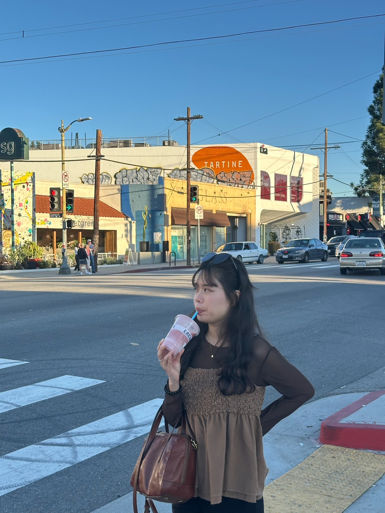

Solution Planner
用雙手實作
創造影響力.
Hello，我是 Emily，擁有5年資訊軟體 B2B 解決方案規劃經驗，喜歡有溫度的交流與思考，希望創造一個生活練習與分享想法的園區。

Case Study
01 /
Claude & Gemini
官網產出實記
看 AI 如何從團隊夥伴，從 0 到 1 打造品牌空間。
Read More →
Certification
02 /
iPAS AI 應用
規劃師考取
梳理考試重點，分享 B2B 角度的 AI 應用與知識體系。
View Notes →
Mindset
03 /
保持快樂正面
的面對這世界
「喜歡做有意義的交流」，這是規劃中最核心的感性力量。
Connect →